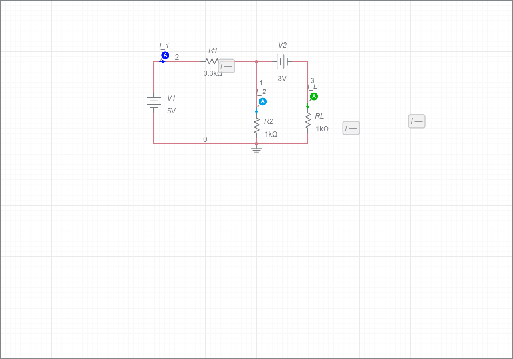

חלק א': אימות משפט סופרפוזיציה ומאזן הספקים
בחלק זה נבדוק באופן מעשי מעגל בעל שני מקורות עירור בלתי תלויים, ונאמת את משפט ההרכבה (סופרפוזיציה) עבור זרמים במעגל. כמו כן, נאסוף נתונים שיאפשרו לנו לבצע בדיקת מאזן הספקים מלאה.
📐 שרטוט סכמתי — מעגל רשת T בעל שני מקורות:

V1=5V, V2=3V, R1=300Ω, R2=1kΩ, RL=1kΩ
📝 שלבי העבודה ומהלך המדידה:
- הרכיבו את רשת הנגדים: \(R_1 = 300\Omega\), \(R_2 = 1k\Omega\), \(R_L = 1k\Omega\).
- חברו את הספקים: \(V_1 = 5V\), \(V_2 = 3V\) (אדמה משותפת).
- מצב 1 (מלא): מדדו את הזרם דרך העומס (\(I_L\)).
- מצב 2 (רק V1): כבו את \(V_2\), קצרו את הדקיו לאדמה. מדדו \(I'_L\).
- מצב 3 (רק V2): כבו את \(V_1\), קצרו את הדקיו לאדמה. מדדו \(I''_L\).
📊 טבלה ריקה לרישום המדידות:
| מצב עירור המעגל |
נוסחה תיאורטית |
זרם נמדד [mA] |
| מצב מלא: V1 ו-V2 פועלים |
IL = I'L + I''L |
|
| מצב חלקי א': רק V1 פועל |
I'L |
|
| מצב חלקי ב': רק V2 פועל |
I''L |
|
💾 סיימתם למדוד? וודאו שכל הנתונים רשומים ושמורים היטב! אתם תזדקקו להם לשלב עיבוד הנתונים.